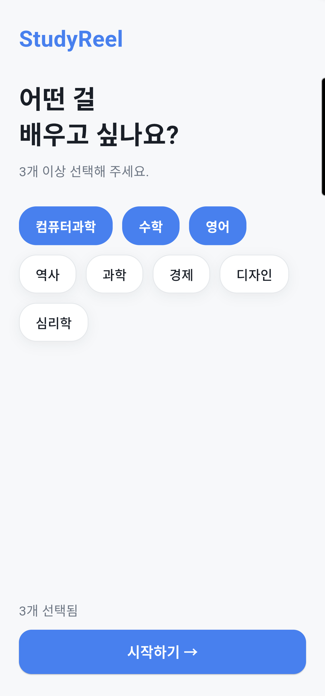
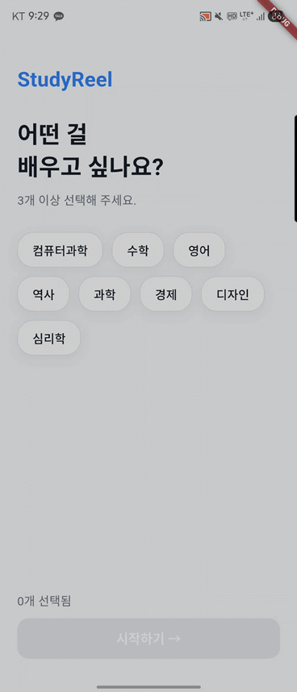

StudyReel
스크롤 중독을 학습 습관으로.
유튜브 쇼츠를 교육용 세로 피드로.

01 — 비전 (Vision)
02 — 문제 정의 (Problem)
| 기존 방식 | 한계 |
|---|---|
| YouTube 직접 검색 | 알고리즘이 오락 영상으로 이탈 유도 |
| 인강 플랫폼 | 긴 호흡 — 자투리 시간엔 부적합 |
| Shorts 학습 채널 | 구독해도 피드에 예능이 섞임 |
필요한 것
이탈 경로가 차단된,
학습 전용 숏폼 피드
03 — 프로젝트 계획 · WBS & 기술 스택
WBS — MoSCoW
MUST 온보딩 → 인앱 Shorts 피드 → 저장 ✓
SHOULD 탐색·프로필·스트릭·로그인 ✓
COULD 무한 스크롤·시청 기록·수준 선택 ✓
→ 전 항목 완료
기술 스택
| 프레임워크 | Flutter 3.35 | ADR-0001 |
| 상태관리 | Riverpod | 단방향 |
| 백엔드 | Firebase Auth·Firestore | 0002/0003 |
| 콘텐츠 | YouTube Data API v3 | 0004/0005 |
04 — 프로젝트 진행 및 완료
피벗 근거: Gemini 무료 토큰 한도를 실측 → 데이터로 방향 전환 (ADR-0004) · 데드코드 7파일 청산
05 — 어떻게 구현했나 · 아키텍처


단방향 의존 — UI는 Provider만, Provider는 Repository만 안다 · 모든 정책(캐시 우선, 없으면 API)은 Repository 한 곳 · 디렉토리 core / data / domain / presentation
06 — 구현 시행착오 · 가설–검증 디버깅
| 가설 | 검증 | |
|---|---|---|
| WebView 합성 불가 | 실기기에서 에러 UI 또렷이 렌더 | 폐기 |
| autoplay 차단 | 152 해결 후 소리 자동재생 정상 | 폐기 |
| Shorts 임베드 정책 | 채널 다른 3개 영상 전부 152 | 규명 |
→ 돌파
라이브러리 소스에서 origin이 host로도 쓰임을 발견 → 호스트를 youtube-nocookie로 교체.
152 소멸, 실기기(Z Fold7) 인앱 재생 검증.
Claude · GPT · Gemini를 역할별로 나눠 쓰고 출력을 교차검증해 해법 채택
07 — 성능 최적화 · 코드 품질
성능 최적화
⚡ YouTube 쿼터(10k/day) 보호 — Firestore 영구 캐싱 → 재방문 API 호출 0회
⚡ Gemini 429 → 지수 백오프 (10→20→40s)
⚡ 재생 불가 영상 3초 워치독 자동 스킵 · 시청 영상 제외 무한 스크롤
코드 품질 관리
✓ flutter analyze 에러/경고 0건 — AGENTS.md 게이트로 명문화
✓ DRY — youtube_launcher·VideoListTile 공통화
✓ 피벗 후 데드코드 즉시 제거 · 그린 상태에서만 커밋
08 — 테스트 · 단위 + 통합
| 종류 | 도구 | 개수 | 대상 |
|---|---|---|---|
| 단위 · 위젯 | flutter_test · fake_cloud_firestore · firebase_auth_mocks | 50 | 캐시·북마크·스트릭·중복제거·토픽·서비스 필터 |
| 통합 | @firebase/rules-unit-testing (에뮬레이터) | 4 | Firestore 보안 규칙 — 내 데이터만 읽기/쓰기 |
시간 의존 로직(스트릭)은 now 콜백 주입 → 결정적 테스트 · 무한 스크롤 중복제거는 순수 함수 dedupeAppend로 분리해 TDD
09 — 개발 환경 · 빌드 · 배포
| 단계 | 내용 | 문서 |
|---|---|---|
| 환경 설정 | Flutter SDK → pub get → API 키 2종 발급 → flutterfire configure (목표 5분) | docs/setup.md |
| 빌드 | 소스→APK 컴파일 · --dart-define으로 키 주입 (소스에 키 없음) | docs/deploy.md |
| 배포 | APK → GitHub Pages 호스팅 + adb install · 서버 배포 없음(ADR-0003) | docs/deploy.md |
설치 가이드 — GitHub README에 소개 페이지·APK 다운로드·5분 셋업 · 한글 경로 impellerc 크래시는 buildDirectory 리다이렉트로 우회(문서화)
10 — ADR 요약 · 질의응답 준비
| ADR | 결정 | 핵심 사유 |
|---|---|---|
| 0001 | Flutter 채택 | 단일 코드베이스, 세로 피드 구현 용이 |
| 0002 | Firebase Auth + Firestore | 서버리스, 사용자별 문서 모델 |
| 0003 | Cloud Functions 미사용 | Blaze 과금 회피 → 클라이언트 직접 호출 + 캐싱 |
| 0004 | Gemini 카드 → Shorts 피벗 | 토큰 한도 실측 데이터 기반 전환 |
| 0005 | url_launcher → 인앱 iframe | “인앱이 안 되면 컨셉이 죽는다” |
모든 기술 질문은 .planning/decisions/ ADR 문서 기준으로 답변합니다.
11 — AI Agent 워크플로우 · 가산점
Claude Code 스킬 체인
brainstorming → writing-plans → executing-plans(TDD) → systematic-debugging. 막히면 GPT·Gemini 교차검증.
AGENTS.md 단일 헌법 파일
빌드 게이트·아키텍처 불변식·캐싱 정책·테스트·커밋 규약을 한 파일에 통합 → 어떤 에이전트든 같은 규칙으로 작업.
LLM이 읽는 지식 베이스
ADR(결정) + 트러블슈팅 블로그(152 전 과정) + AGENTS.md(규칙) = 새 세션 에이전트도 즉시 맥락 복원.
AI 출력은 항상 화면·로그·테스트로 끝을 본다 — 오진 2건을 실측으로 폐기
12 — 🎬 시연 데모 (30초)

임팩트 — 유튜브가 막아둔 Shorts가, 우리 앱 안에서 소리내며 재생되는 순간
13 — 활용 방안 · 향후 발전
어떻게 활용할 것인가
📚 자투리 시간 마이크로러닝 — 토픽·수준 맞춤 피드
🏫 교육기관 — 과목별 큐레이션 피드로 확장 (Firestore 토픽 모델 재사용)
향후 발전 방향
🤖 시청 기록 기반 개인화 추천 · 학습 퀴즈(Gemini 키 슬롯 준비)
🧪 자동 integration_test 도입 · iOS 지원